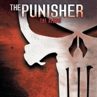

The Punisher (2004)
Soundtrack
No links
| Artist | Soundtrack |
|---|---|
| Year | 2004 |
| Genre | Soundtrack |
| Tracks | 17 |
Track List
| 1 | Step Up | 3:18 |
| 2 | Bleed | 3:35 |
| 3 | Slow Motion | 3:32 |
| 4 | Never Say Never | 4:24 |
| 5 | Broken | 4:19 |
| 6 | Finding Myself | 3:32 |
| 7 | Lost In A Portrait | 4:41 |
| 8 | Still Running | 3:11 |
| 9 | Ashes To Ashes | 5:06 |
| 10 | Sold Me | 3:40 |
| 11 | Eyes Wired Shut | 3:15 |
| 12 | Slow Chemical | 3:18 |
| 13 | The End Has Come | 3:09 |
| 14 | Piece By Piece | 3:38 |
| 15 | Bound To Violence | 2:23 |
| 16 | Sick | 3:06 |
| 17 | Complicated | 3:08 |